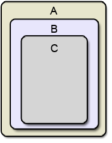

| Home · All Classes · Modules · QSS HELP · QSS 案例 · VER007 HOME |
该QHoverEvent类包含描述一个鼠标事件参数。More...
继承QEvent。
该QHoverEvent类包含描述一个鼠标事件参数。
当鼠标光标移入，出，或窗口小部件中的鼠标事件发生时，如果部件有Qt.WA_Hover属性。
该功能pos（ ）给出当前光标位置，而oldPos（ ）给出的旧鼠标的位置。
有事件之间有一些相似之处QEvent.HoverEnter和QEvent.HoverLeave和事件QEvent.Enter和QEvent.Leave。然而，他们都略有不同，因为我们做一个更新（ ）中的事件处理程序HoverEnter和HoverLeave。
QEvent.HoverMove也是从稍微不同的QEvent.MouseMove。让我们考虑包含这又包含子C（所有带鼠标跟踪启用）儿童B中的顶层窗口答：

现在，如果你从顶部到A的中间底部移动光标，你将得到下面的QEvent.MouseMove事件：
你会得到相同的事件QEvent.HoverMove，除了事件始终传播到顶层，无论该事件是否被接受与否。它只会停止与传播Qt.WA_NoMousePropagation属性。
在这种情况下，事件将发生在下列方式：
构造一个悬停事件对象。
该type参数必须是QEvent.HoverEnter，QEvent.HoverLeave或QEvent.HoverMove。
该pos是当前鼠标光标的位置相对于接收部件，而oldPos是先前的鼠标光标的位置相对于接收部件。
返回鼠标光标的前面的位置，相对于接收到的事件的插件。如果没有之前的位置， oldPos （ ）将返回相同的位置pos（ ） 。
On QEvent.HoverEnter活动，这一立场永远是QPoint（-1 ，-1）。
See also pos（ ） 。
返回鼠标光标的位置，相对于接收到的事件的插件。
On QEvent.HoverLeave活动，这一立场永远是QPoint（-1 ，-1）。
See also oldPos（ ） 。
| PyQt 4.10.3 for X11 | Copyright © Riverbank Computing Ltd and Nokia 2012 | Qt 4.8.5 |